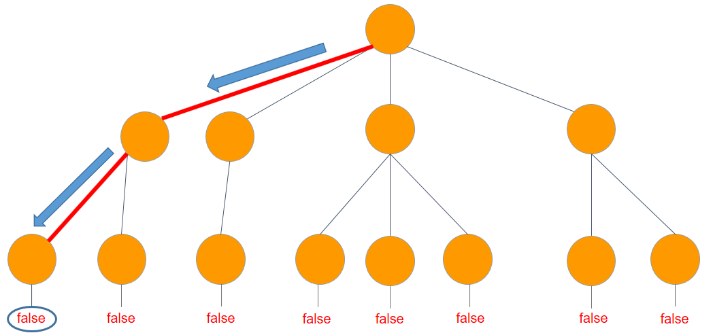

La Ingeniería en el Desarrollo de Software es una carrera enfocada en el diseño, creación y mantenimiento de aplicaciones y sistemas informáticos.
Los estudiantes desarrollan habilidades en programación, análisis de sistemas, bases de datos, redes y mucho más.
Esta carrera es clave en un mundo digital, permitiendo automatizar procesos y mejorar la productividad.
Los ingenieros de software trabajan tanto en la industria pública como privada.
La carrera fomenta la creatividad, la lógica y la resolución de problemas reales mediante tecnología.
| Figura | Descripción |
|---|---|
|  | Desarrollo de Lógica de Programación |
| Redes | |
|
Diseño de Bases de Datos |
| YouTube |